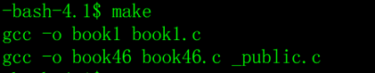
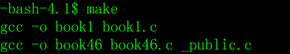
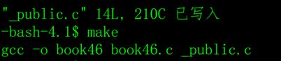

转载自码农有道
在软件的工程中的源文件是很多的，其按照类型、功能、模块分别放在若干个目录和文件中，哪些文件需要编译，那些文件需要后编译，那些文件需要重新编译，甚至进行更复杂的功能操作，这就有了我们的系统编译的工具。
在linux和unix中，有一个强大的实用程序，叫make，可以用它来管理多模块程序的编译和链接，直至生成可执行文件。
make程序需要一个编译规则说明文件，称为makefile，makefile文件中描述了整个软件工程的编译规则和各个文件之间的依赖关系。
makefile就像是一个shell脚本一样，其中可以执行操作系统的命令，它带来的好处就是我们能够实现“自动化编译”，一旦写好，只要一个make命令，整个软件功能就完全自动编译，提高了软件开发的效率。
make是一个命令工具，是一个解释makefile中指令的命令工具，一般来说大多数编译器都有这个命令，使用make可以是重新编译的次数达到最小化。
makefile的编写
makefile文件的规则可以非常复杂，比C程序还要复杂，我通过示例来介绍它的简单用法。
文件名：makefile，内容如下：
1 | all: book1 book46 |
- 第一行
1
all:book book46
all: 这是固定的写法。
book book46表示需要编译目标程序的清单，中间用空格分隔开。
第二行
makefile文件中的空行就像C程序中的空行一样，只是为了书写整洁，没有什么意义。第三行
1
book1:book1.c
book1:表示需要编译的目标程序。
book1.c表示如果要编译目标程序book1，需要依赖源程序book1.c，当book1.c的内容发生了变化，执行make的时候就会重新编译book1。
- 第四行
1
gcc -o book1 book1.c
这是一个编译命令，和在操作系统命令行输入的命令一样，但是要注意一个问题，在gcc之前要用tab键，看上去像8个空格，实际不是，一定要用tab，空格不行。
- 第六行
1
book46:book46.c _public.h _public.c
与第三行的含义相同。
book46:表示编译的目标程序。
book46.c表示如果要编译目标程序book46，需要依赖源程序book46.c、_public.h和_public.c三个源程序，只要任何一个的内容发生了变化，执行make的时候就会重新编译book46。
- 第七行
1
gcc -o book46 book46.c _public.c
与第四行的含义相同。
- 第九行
1
clean:
清除目标文件，清除的命令由第十行之后的脚本来执行。
- 第十行
1
rm -f book1 book46
清除目标文件的脚本命令，注意了，rm之前也是一个tab键，不是空格。
make命令
makefile准备好了，在命令提示符下执行make就可以编译makefile中all参数指定的目标文件。
程序make编译目标程序。

再执行一次make。
因为全部的目标程序都是最新的，所以提示没有目标可以编译。
执行make clean，执行清除目标文件的指令。
再执行make重新编译。

修改_public.c程序，随便改点什么，只要改了就行。
然后再make

注意了，因为book46依赖的源程序之一_public.c改变了，所以book46重新编译。
book1没有重新编译，因为book1依赖的源文件并没有改变。
makefile文件中的变量
makefile中，变量就是一个名字，变量的值就是一个文本字符串。在makefile中的目标，依赖，命令或其他地方引用变量时，变量会被它的值替代。
我还通过示例来介绍它的简单用法。
1 | CC=gcc |
- 第一行
1
CC=gcc
定义变量CC，赋值gcc。
- 第二行
1
FLAG=-g
定义变量FLAG，赋值-g。
- 第七行
1
$(CC) $(FLAG) -o book1 book1.c
$(CC)和$(FLAG)就是使用变量CC和FLAG的值，类似于C语言的宏定义，替换后的结果是：
1 | gcc -g -o book1 book1.c |
$(变量名)这是语法规定，不要问为什么，照这么用就行。
在makefile文件中，使用变量的好处有两个：1）如果在很多编译指令采用了变量，只要修改变量的值，就相当于修改全部的编译指令；2）把比较长的、公共的编译指令采用变量来表示，可以让makefile更简洁。
应用经验
makefile文件的编写可以很复杂，复杂到不想看，在实际开发中，用不着那么复杂的makefile，我追求简单实用的方法，腾出更多的时间和精力去做更重要的事情。